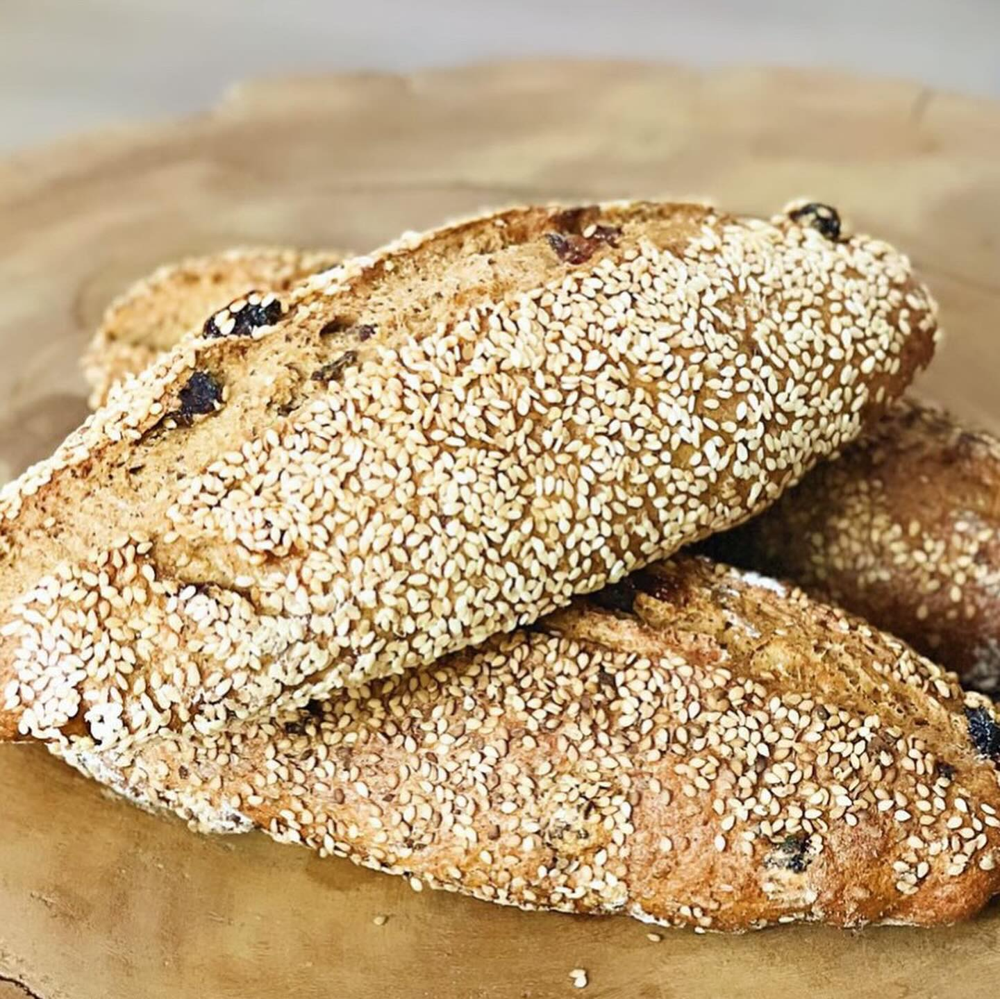

How to Make "Mburu Tapalapa" Senegalese Bread

Mburu tapala neex na. Bimaa neekee Senegal, bess bu neek mburu laa ndekki.
Ingredients
- 4 Cups flour
- 3 tsp Yeast (1 packet)
- 1 tsp Salt
- 1 1/2 Cup Warm Water
Directions
- Add and mix dry ingredients in a large bowl.
- Slowly add water and mix until dough-like consistency.
- Cover with dry cloth and let rise until doubled in size (about 1 hour).
- Cut and roll in to 3 loaves. Use a knife to make a shallow cut along the top center of each loaf.
- Let rise until double in size again (about 30 min).
- Brush tops lightly with water right before going into the oven.
- Bake at 450 degrees F for about 15 min. or until the crust is golden brown.
- Eat It!